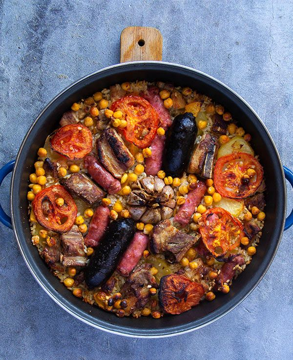

Ingredientes (4-6 personas)
| Producto |
Cantidad |
| Arroz bomba |
300g |
| Garbanzos cocidos |
100g |
| Morcilla de cebolla |
4 |
| Patata |
1 |
| Tomate triturado |
3 cucharadas |
| AOVE |
| Azafrán |
|
| Costillas |
4 |
| Tomate |
1 |
| Ajo |
1 cabeza + 2 dientes |
| Sal |
|

Elaboración
- Pela la patata, córtala en lonchas finas y fríelas en una sartén con aceite. Escurre y reserva.
- Corta el tomate en lonchas y rebózalas en una sartén. Retira a un plato.
- Corta las costillas por la mitad, sazónalas y dóralas en otra sartén con aceite. Retira a un plato.
- Agrega las morcillas y rehógalas. Retíralas.
- Añade azafrán a la sartén, la salsa de tomate, los garbanzos y el arroz. Sazona y rehoga.
- Coloca el conjunto en una cazuela de barro y añade la costilla y la morcilla. Agrega las patatas y las lonchas de tomate.
- Coloca la cabeza de ajos en la mitad, vierte el caldo e introduce la cazuela de barro en el horno a 220º durante 20 minutos.
- Sirve.